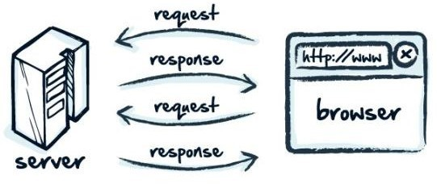
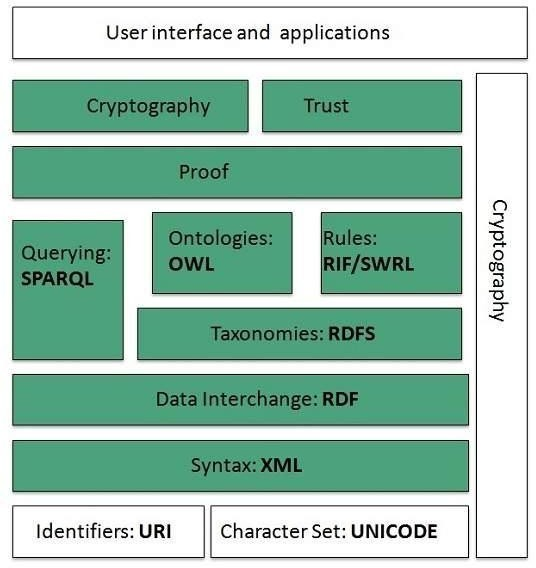
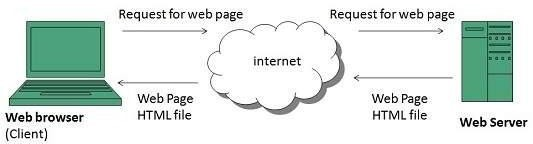

Nội dung bài học
FTP (viết tắt của File Transfer Protocol dịch ra là "Giao thức truyền tập tin") thường được dùng để trao đổi tập tin qua mạng lưới truyền thông dùng giao thức TCP/IP (chẳng hạn như Internet - mạng ngoại bộ - hoặc intranet - mạng nội bộ).
Hoạt động của FTP cần có hai máy tính, một máy chủ và một máy khách. Máy chủ FTP, dùng chạy phần mềm cung cấp dịch vụ FTP, gọi là trình chủ, lắng nghe yêu cầu về dịch vụ của các máy tính khác trên mạng lưới. Máy khách chạy phần mềm FTP dành cho người sử dụng dịch vụ, gọi là trình khách, thì khởi đầu một liên kết với máy chủ. Một khi hai máy đã liên kết với nhau, máy khách có thể xử lý một số thao tác về tập tin, như tải tập tin lên máy chủ, tải tập tin từ máy chủ xuống máy của mình, đổi tên của tập tin, hoặc xóa tập tin ở máy chủ v.v.
Vì giao thức FTP là một giao thức chuẩn công khai, cho nên bất cứ một công ty phần mềm nào, hay một lập trình viên nào cũng có thể viết trình chủ FTP hoặc trình khách FTP. Hầu như bất cứ một nền tảng hệ điều hành máy tính nào cũng hỗ trợ giao thức FTP. Điều này cho phép tất cả các máy tính kết nối với một mạng lưới có nền TCP/IP, xử lý tập tin trên một máy tính khác trên cùng một mạng lưới với mình, bất kể máy tính ấy dùng hệ điều hành nào (nếu các máy tính ấy đều cho phép sự truy cập của các máy tính khác, dùng giao thức FTP).
Hiện nay trên thị trường có rất nhiều các trình khách và trình chủ FTP, và phần đông các trình ứng dụng này cho phép người dùng được lấy tự do, không mất tiền.
Thư điện tử, hay email (từ chữ electronic mail), đôi khi được dịch không chính xác là điện thư, là một hệ thống chuyển nhận thư từ qua các mạng máy tính.
Email là một phương tiện thông tin rất nhanh. Một mẫu thông tin (thư từ) có thể được gửi đi ở dạng mã hoá hay dạng thông thường và được chuyển qua các mạng máy tính đặc biệt là mạng Internet. Nó có thể chuyển mẫu thông tin từ một máy nguồn tới một hay rất nhiều máy nhận trong cùng lúc.
Ngày nay, email chẳng những có thể truyền gửi được chữ, nó còn có thể truyền được các dạng thông tin khác như hình ảnh, âm thanh, phim, và đặc biệt các phần mềm thư điện tử kiểu mới còn có thể hiển thị các email dạng sống động tương thích với kiểu tệp HTML.
Phần mềm thư điện tử (email software) là loại phần mềm nhằm hỗ trợ cho người dùng việc chuyển và nhận các mẫu thông tin (thường là dạng chữ). Thông tin có thể đưa vào phần mềm thư điện tử bằng cách thông dụng nhất là gõ chữ bàn phím hay cách phương cách khác ít dùng hơn như là dùng máy quét hình (scanner), dùng máy ghi hình số (digital camera) đặc biệt là các Web cam. Phần mềm thư điện tử giúp đỡ cho việc tiến hành soạn thảo, gửi, nhận, đọc, in, xoá hay lưu giữ các (điện) thư. Có hai trường hợp phân biệt phần mềm thư điện tử là:
Nơi cung ứng phần mềm cũng như phương tiện chuyển thư điện tử gọi là nhà cung ứng dịch vụ thư điện tử (email sevice provider).
Máy tính làm việc cung ứng các dịch vụ thư điện tử là MTA (từ chữ mail transfer agent) hay là đại lý chuyển thư. Vì đây là máy chủ nên khi không bị nhầm lẫn với các loại máy chủ khác thì người ta cũng gọi MTA là máy chủ hay rõ hơn là máy chủ thư điện tử.
Các dịch vu thư điện tử có thể được cung ứng miễn phí hay có lệ phí tuỳ theo nhu cầu và mụch đích của ngưòi dùng. Ngày nay, email thường được cung cấp kèm với các phương tiện Internet khi người tiêu dùng ký hợp đồng với các dịch vụ Internet một cách miễn phí.
Telnet là một ứng dụng cho phép người dùng ngồi trên một thiết bị đầu cuối có thể thông qua kết nối mạng đến một thiết bị từ xa để điều khiển nó bằng câu lệnh như là đang ngồi tại máy ở xa. Một máy trạm có thể thực hiện đồng thời nhiều phiên telnet đến nhiều địa chỉ IP khác nhau. Đồng thời đối với cùng một host đích ở xa, có thể telnet đến các cổng khác nhau (ví dụ cổng 80 của web, cổng 20,21 của FTP).
World Wide Web, gọi tắt là Web hoặc WWW, là mạng lưới toàn cầu hay là một không gian thông tin toàn cầu mà mọi người có thể truy nhập (đọc và viết) qua các máy tính nối với mạng Internet. Thuật ngữ này thường được hiểu nhầm là từ đồng nghĩa với chính thuật ngữ Internet. Nhưng Web thực ra chỉ là một trong các dịch vụ chạy trên Internet, chẳng hạn như dịch vụ thư điện tử. Web được phát minh và đưa vào sử dụng vào khoảng năm 1990, 1991 bởi viện sĩ Viện Hàn lâm Anh Tim Berners-Lee và Robert Cailliau (Bỉ) tại CERN, Geneva, Switzerland.
HTTP là chữ viết tắt của HyperText Transfer Protocol (giao thức truyền tải siêu văn bản). Đây là một giao thức ứng dụng trong bộ các giao thức TCP/IP (gồm một nhóm các giao thức nền tảng cho internet).
HTTP hoạt động dựa trên mô hình Client – Server. Trong mô hình này, các máy tính của người dùng sẽ đóng vai trò làm máy khách (Client). Sau một thao tác nào đó của người dùng, các máy khách sẽ gửi yêu cầu đến máy chủ (Server) và chờ đợi câu trả lời từ những máy chủ này. Để có thể nói chuyện được với nhau, các máy chủ và máy khách phải thực hiện việc trao đổi thông qua các giao thức. Một trong những giao thức được sử dụng thường xuyên nhất chính là HTTP.
URL, viết tắt của Uniform Resource Locator (Định vị Tài nguyên thống nhất), được dùng để tham chiếu tới tài nguyên trên Internet. URL mang lại khả năng siêu liên kết cho các trang mạng. Các tài nguyên khác nhau được tham chiếu tới bằng địa chỉ, chính là URL, còn được gọi là địa chỉ web hay là liên kết mạng (hay ngắn gọn là liên kết). Về kỹ thuật, URL là một dạng của URI (Uniform Resource Identifier), nhưng trong nhiều tài liệu kỹ thuật và các cuộc thảo luận, URL thường được sử dụng như một từ đồng nghĩa với URI, và điều này không bị coi là một vấn đề. Khi bạn gõ một địa chỉ Web URL vào trình duyệt Web, một lệnh HTTP sẽ được gửi tới Web server để ra lệnh và hướng dẫn nó tìm đúng trang Web được yêu cầu. Trang Web này sau đó sẽ được kéo về và mở trên trình duyệt Web. Nói đơn giản hơn, HTTP là giao thức giúp cho việc truyền tải file từ một Web server vào một trình duyệt Web để người dùng có thể xem một trang Web đang hiện diện trên trình duyệt.
Minh hoạ URL và http
Tổng quan
World Wide Web, gọi tắt là Web hoặc WWW, là mạng lưới toàn cầu hay là một không gian thông tin toàn cầu mà mọi người có thể truy nhập (đọc và viết) qua các máy tính nối với mạng Internet. Thuật ngữ này thường được hiểu nhầm là từ đồng nghĩa với chính thuật ngữ Internet. Nhưng Web thực ra chỉ là một trong các dịch vụ chạy trên Internet, chẳng hạn như dịch vụ thư điện tử. Web được phát minh và đưa vào sử dụng vào khoảng năm 1990, 1991 bởi viện sĩ Viện Hàn lâm Anh Tim Berners-Lee và Robert Cailliau (Bỉ) tại CERN, Geneva, Switzerland.
Kiến trúc của WWW
Kiến trúc tổng quát của WWW thể hiện qua sơ đồ sau:
Kiến trúc tổng quát cùa WWW
Nguyên lí hoạt động của www
Khi bạn gõ một địa chỉ Web URL vào trình duyệt Web, một lệnh HTTP sẽ được gửi tới Web server để ra lệnh và hướng dẫn nó tìm đúng trang Web được yêu cầu. Trang Web này sau đó sẽ được kéo về và mở trên trình duyệt Web. Nói đơn giản hơn, HTTP là giao thức giúp cho việc truyền tải file từ một Web server vào một trình duyệt Web để người dùng có thể xem một trang Web đang hiện diện trên trình duyệt.
Hoạt động của WWW
Web tĩnh
Web động
Web browser (trình duyệt web)
Một web browser là một phần mềm ứng dụng để truy xuất, trình diễn và chuyển các nguồn thông tin (information resource) trên mạng hệ thống mạng toàn cầu (World Wide Web). Một nguồn thông tin được nhận dạng bởi một Uniform Resource Identifier (URI) và có thể là một trang web, phim - video, hình ảnh (images) hoặc các mẫu thông tin khác.
Web server (máy chủ web)
Web server (máy phục vụ Web): máy tính mà trên đó cài đặt phần mềm phục vụ Web, đôi khi người ta cũng gọi chính phần mềm đó là Web Server.Tất cả các Web Server đều hiểu và chạy được các file *.htm và *.html, tuy nhiên mỗi Web Server lại phục vụ một số kiểu file chuyên biệt chẳng hạn như IIS của Microsoft dành cho *.asp, *.aspx...; Apache dành cho *.php...; Sun Java System Web Server của SUN dành cho *.jsp...